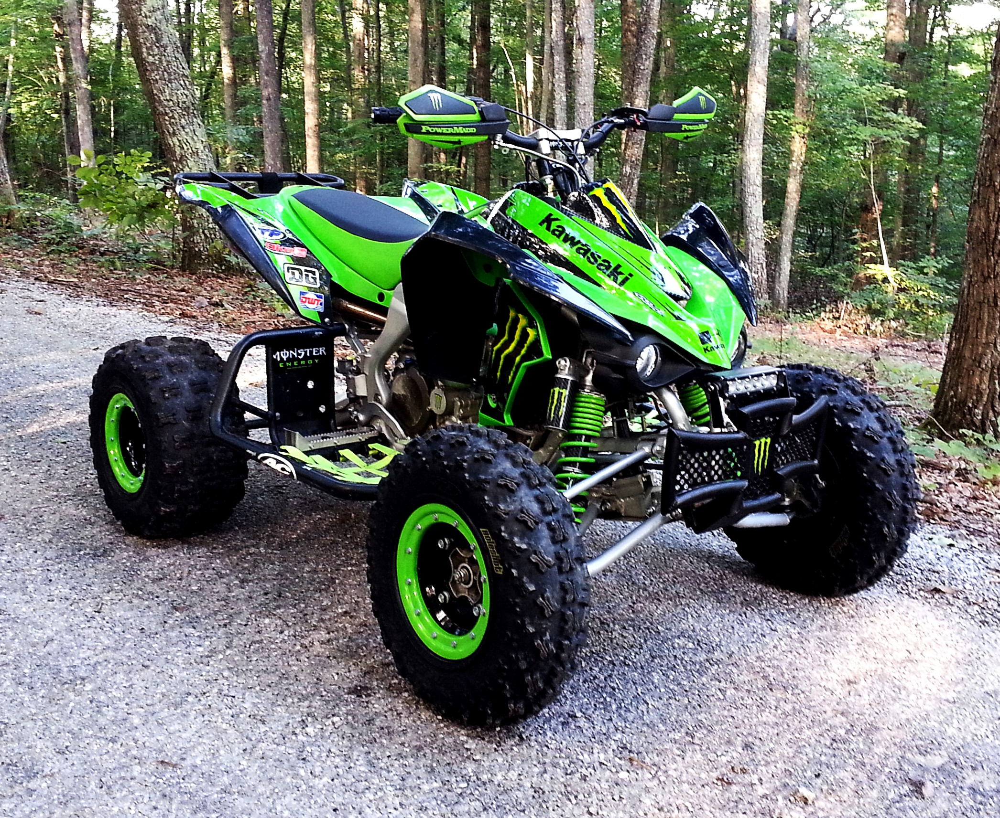

Az első motorom egy Kawasaki kfx 450 replika quad volt, amit 2010-ben kaptam. Mivel replika volt, így csak a kinézete hasonlított az eredeti modellhez.
A motorja 450 köbcenti helyett csak 125 köbcentisre készült, max teljesítményét, 4,5 kW-ot 8500-as fordulaton érte el. Ehhez a léghűtéses 4 ütemű motorhoz egy félautomata váltó társult, aminek előre 3 sebessége, hátra pedig 1 sebessége volt. Önindítóval indult. A futómű, a felfüggesztés és a fékek is sokkal gyengébbek voltak rajta. Elől dobfék, míg hátul hidraulikus tárcsafék dolgozott a biztonságos megálláson. A tömege 75 kilogrammot nyomott.
Arra amire használtam tökéletes volt, megtanultam vele terepen motorozni.
Ez könnyen ment, köszönhetően a négy keréknek, amik miatt sokkal stabilabb voltam, mint két keréken. A váltó nagyban megkönnyítette a dolgomat, mert nem kellett a kuplungot használnom, így a váltás is egyszerűbb volt és le se fulladtam vele. Ahogy egyre többet mentem, egyre ügyesebb lettem és a barátokkal már rendszeres hobbinkká vált a motorozás. Egész napokat töltöttünk kint és közben megismertük a környék tájait. Nyáron a porban, télen pedig a hóban motoroztunk.
2014 őszén viszont már a quadom kezdett kicsi lenni és éreztem, hogy kimotoroztam már amit ki tudtam belőle, így egy cross motor váltotta fel és megtalálta új gazdáját.